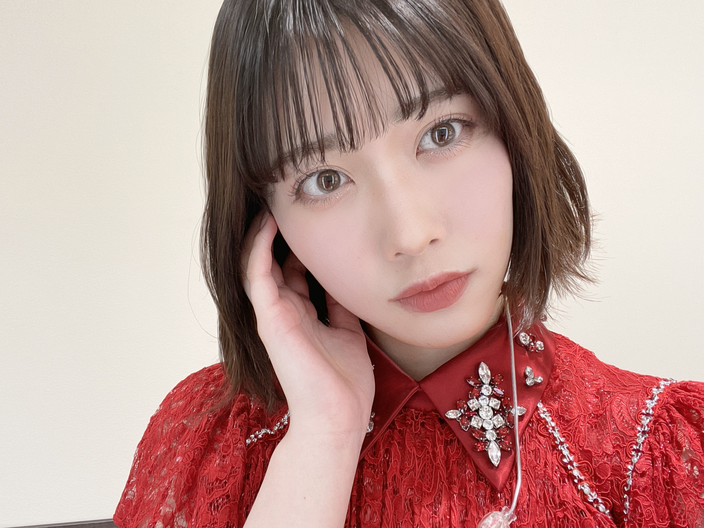

2020/1226Satすてきなみっかかん
こんばんは！
伊藤純奈です


ぴーす！
まず最初に
アンダーライブ2020
無事に終了致しました！
会場に足を運んでくださった
みなさま、配信で応援してくださった
みなさまありがとうございました☺︎
久々にみなさんに直接会うことが
できて本当に嬉しかったです〜
みんな元気そうでよかったあ
感染対策もしっかりしてくださって
本当にありがとうございました！
スティックバルーンでの
応援も嬉しかったよ〜〜
ひとつになれた感じがして
これぞライブ！！ってテンション
あがりました☺︎
タオルやサイリウムありがとう！
後ろの方までみえてたよ〜！！

本当に本当にありがとうございました！
またライブが普通にできる
生活に戻れるようみんなで
気をつけていきましょう...！
お話変わって
じゅんが去年出演してた
舞台「オリエント急行殺人事件」の
再演が明日27日までやっているので
すが、やっと観に行けました！！
じゅんが演じてたアンドレニ伯爵夫人は
松井玲奈さん♡とってもとっても綺麗で
素敵なアンドレニでした〜〜うっとり
しちゃいました。
今でもセリフを結構覚えてて
なんだかうれしかった☺︎
前回共演してた
マルシアさん、宍戸美和公さん、
室龍太さん3人のお芝居みて
あ〜〜懐かしい〜〜しびれる〜！！
ってなりました！！！
いいなあお芝居って...！！
「8th YEAR BIRTHDAY LIVE」
のBlu-ray＆DVD発売中です☺︎
感想おしえて〜〜

昨日はクリスマスだったね〜♡
毎年おうちでまったりなので
今年もおうちでまったりでした！
みんなはなにした？？
2020/12/26 19:24
コメント(317)
あけおめ！
今年もいろいろな所で君たちが活躍してるのを楽しみにしています。
年末年始の番組等を視て
レコード大賞獲れなかったけど、1・2期生は全員参加したのかな？そのパフォーマンスは綺麗だったよ。
まぁ今年は「炎」でほぼ決まりだろうなと思ってたからね。
紅白はワインレッドの衣装がカッコ良かった。そしてなんといっても全メンバー参加だしね。
できればコロナ禍の中でみんなを元気づけてくれる曲として「Sing Out!」を歌って欲しかったなぁ。
ディズニーメドレーはまず「寒そう」って思っちゃった(笑)
紅組優勝もしちゃったね！乃木坂46が紅白初出場した2015年も久しぶりに紅組優勝したんだよね。懐かしい(笑)
2016も紅組優勝したからまた連勝しよう！
CDTVは「I see…」も歌ったんだね。去年は「3色パン」もCDTVで歌ったりして、カップリング曲が取り上げられてうれしいな。
荒野行動ライブは、自分の作ったキャラでペンライト持ってコール出来るとかすごく楽しかった。あと2、3曲欲しかったなぁ。
そうそう、浜ちゃんの爆買いツアーで、真夏キャプテン曰く「ポンコツだけど持ってる」与田ちゃんがGo-Pro360°カメラを手に入れました。振り付け覚えるのに便利だということで、与田ちゃんに感謝をしましょう(笑)
今年もいろいろな所で君たちが活躍してるのを楽しみにしています。
年末年始の番組等を視て
レコード大賞獲れなかったけど、1・2期生は全員参加したのかな？そのパフォーマンスは綺麗だったよ。
まぁ今年は「炎」でほぼ決まりだろうなと思ってたからね。
紅白はワインレッドの衣装がカッコ良かった。そしてなんといっても全メンバー参加だしね。
できればコロナ禍の中でみんなを元気づけてくれる曲として「Sing Out!」を歌って欲しかったなぁ。
ディズニーメドレーはまず「寒そう」って思っちゃった(笑)
紅組優勝もしちゃったね！乃木坂46が紅白初出場した2015年も久しぶりに紅組優勝したんだよね。懐かしい(笑)
2016も紅組優勝したからまた連勝しよう！
CDTVは「I see…」も歌ったんだね。去年は「3色パン」もCDTVで歌ったりして、カップリング曲が取り上げられてうれしいな。
荒野行動ライブは、自分の作ったキャラでペンライト持ってコール出来るとかすごく楽しかった。あと2、3曲欲しかったなぁ。
そうそう、浜ちゃんの爆買いツアーで、真夏キャプテン曰く「ポンコツだけど持ってる」与田ちゃんがGo-Pro360°カメラを手に入れました。振り付け覚えるのに便利だということで、与田ちゃんに感謝をしましょう(笑)
純奈ちゃんあけましておめでとうございます！
純奈ちゃん、お正月はどんな日々を過ごしましたか〜？
もうお仕事は始まってるのかな？
私も就活してます、、純奈ちゃんお互い頑張ろうね〜〜
今ミーグリ追加して購入したー！楽しみ･:*+.\(( °▽° ))/.:+
純奈ちゃん、お正月はどんな日々を過ごしましたか〜？
もうお仕事は始まってるのかな？
私も就活してます、、純奈ちゃんお互い頑張ろうね〜〜
今ミーグリ追加して購入したー！楽しみ･:*+.\(( °▽° ))/.:+
そういえばアンダラアフターで話してたワンちゃんの名前と写真をモバメで送ってほしいなー。
じゅんなちゃん
乃木坂三昧お疲れ様でした〜
ゆっくりと咲く花
ボーダー
アナスターシャ
聴くことができて楽しかったです
途中のコメントで
愛犬三昧出たね
アンダーライブのアフタートークで
内緒ねって言ってたけど解禁したのね
運命的な出会いからの話聞きたいな
最後にサヨナラの意味流れて
純奈ちゃんが２期生単独ライブで
歌うはずだった曲だね
２期生ライブの開催と純奈ソロ
絶対叶えてほしいなぁ
次に会えるのは いつかなぁ
またコメントしますね
乃木坂三昧お疲れ様でした〜
ゆっくりと咲く花
ボーダー
アナスターシャ
聴くことができて楽しかったです
途中のコメントで
愛犬三昧出たね
アンダーライブのアフタートークで
内緒ねって言ってたけど解禁したのね
運命的な出会いからの話聞きたいな
最後にサヨナラの意味流れて
純奈ちゃんが２期生単独ライブで
歌うはずだった曲だね
２期生ライブの開催と純奈ソロ
絶対叶えてほしいなぁ
次に会えるのは いつかなぁ
またコメントしますね
こんばんは
寒いですね
仕事クビになりました
人生ｵﾜﾀ ＼(^o^)／
寒いですね
仕事クビになりました
人生ｵﾜﾀ ＼(^o^)／
純奈ちゃん更新ありがとう╰(*´︶`*)╯♡
久々のコメントになりましたm(_ _)m
新年明けましておめでとうございます！
今年もよろしくお願い致します(*´꒳`*)
応援しとるよ〜
これからも出来る時にコメント来ますね✌︎('ω'✌︎ )
コロナなど緊張の続く日々ですが体調に気を付けてね〜（╹◡╹）♡
久々のコメントになりましたm(_ _)m
新年明けましておめでとうございます！
今年もよろしくお願い致します(*´꒳`*)
応援しとるよ〜
これからも出来る時にコメント来ますね✌︎('ω'✌︎ )
コロナなど緊張の続く日々ですが体調に気を付けてね〜（╹◡╹）♡
じゅんなちゃん こんちわ！
アンダーライブ2020から
「その女」が頭の中流れて離れないよー
歌詞をじっくり読み返したら
純奈ちゃんが そのひと役をしてる
映像が頭に浮かんだの びっくり
僕の前の そのひとは 何かつぶやき涙ぐんで
ぼんやりと 窓の外 なぜ眺める？
僕 目線で勝手に想像して
純奈ちゃんを慰めようとする
MV作れそう
僕を純奈ちゃんが演って二役でもいいね
アンダーライブ2020から
「その女」が頭の中流れて離れないよー
歌詞をじっくり読み返したら
純奈ちゃんが そのひと役をしてる
映像が頭に浮かんだの びっくり
僕の前の そのひとは 何かつぶやき涙ぐんで
ぼんやりと 窓の外 なぜ眺める？
僕 目線で勝手に想像して
純奈ちゃんを慰めようとする
MV作れそう
僕を純奈ちゃんが演って二役でもいいね
じゅんなちゃん こんちわ！
アンダーライブ2020から
「その女」が頭の中流れて離れないよー
歌詞をじっくり読み返したら
純奈ちゃんが そのひと役をしてる
映像が頭に浮かんだの びっくり
僕の前の そのひとは 何かつぶやき涙ぐんで
ぼんやりと 窓の外 なぜ眺める？
僕 目線で勝手に想像して
純奈ちゃんを慰めようとする
MV作れそう
僕を純奈ちゃんが演って二役でもいいね
アンダーライブ2020から
「その女」が頭の中流れて離れないよー
歌詞をじっくり読み返したら
純奈ちゃんが そのひと役をしてる
映像が頭に浮かんだの びっくり
僕の前の そのひとは 何かつぶやき涙ぐんで
ぼんやりと 窓の外 なぜ眺める？
僕 目線で勝手に想像して
純奈ちゃんを慰めようとする
MV作れそう
僕を純奈ちゃんが演って二役でもいいね
純奈ー。こんばんは。＾＾
11日のNHK-FM「今日は一日"乃木坂46"三昧」のアンダー楽曲コーナー聴きましたよ。
やっぱ純奈の声とかしゃべり方好きだわーって再認識した。
なんて表現したらいいかなぁ？なんかね、絶妙に甘いんだよね。しかもナチュラルに。人工甘味料は一切加えていません、みたいな。(笑)
的でたとえるなら、真ん中の最高点エリアを射抜かれます。＾＾
コーナーの繋ぎのコメントで純奈は「2021年はワンちゃん三昧にしたい」（あれ？愛犬三昧だったけ？記憶が曖昧でごめん）って話してくれてたけど、ワンちゃんのお姿はいつかどこかで公開されるのかしら？
純奈との仲睦まじいツーショット期待してるよ。＾＾
純奈の成人式はもう2年前になるんだよねぇ。
何を隠そう、自分が乃木坂の公式グッズショップでいわゆる「生写真」を初めて買ったのは、純奈の成人式記念の時、あやねちゃんとのツーショットの5枚セットなのです。
それじゃあ、自分の出来る範囲でしっかりと予防しながら健康に気を付けて頑張っていきましょう。
またね。(^_^)/
P.S.
なあちゃん出演舞台のビジュアル見たよ。かなりファンキーというかパンクというか。(笑)
自分はチケット先行で東京の1公演取れました。純奈も会場で観劇するのかな？
無事に幕が開くことを願うばかりですね。
11日のNHK-FM「今日は一日"乃木坂46"三昧」のアンダー楽曲コーナー聴きましたよ。
やっぱ純奈の声とかしゃべり方好きだわーって再認識した。
なんて表現したらいいかなぁ？なんかね、絶妙に甘いんだよね。しかもナチュラルに。人工甘味料は一切加えていません、みたいな。(笑)
的でたとえるなら、真ん中の最高点エリアを射抜かれます。＾＾
コーナーの繋ぎのコメントで純奈は「2021年はワンちゃん三昧にしたい」（あれ？愛犬三昧だったけ？記憶が曖昧でごめん）って話してくれてたけど、ワンちゃんのお姿はいつかどこかで公開されるのかしら？
純奈との仲睦まじいツーショット期待してるよ。＾＾
純奈の成人式はもう2年前になるんだよねぇ。
何を隠そう、自分が乃木坂の公式グッズショップでいわゆる「生写真」を初めて買ったのは、純奈の成人式記念の時、あやねちゃんとのツーショットの5枚セットなのです。
それじゃあ、自分の出来る範囲でしっかりと予防しながら健康に気を付けて頑張っていきましょう。
またね。(^_^)/
P.S.
なあちゃん出演舞台のビジュアル見たよ。かなりファンキーというかパンクというか。(笑)
自分はチケット先行で東京の1公演取れました。純奈も会場で観劇するのかな？
無事に幕が開くことを願うばかりですね。
純奈、こんばんは。。。。。(3) 三連続没かな ??
日本海側は大雪で大変、太平洋側も寒い毎日ですね ?
今日は温かいのかな ?
お元気ですか ?
☆モバメ 毎日ありがとう、、、写真うれしい
今のアイドルは、本当に忙しいんですね、、、
ブログ書いて、インスタに写真出して、755もやって
☆ NHK-FM「今日は一日"乃木坂46"三昧」聞いていました、、、
「46時間TV」とも違う不思議な感覚ですが、
天下の NHK なので、
CM の中断がないから、まさに non-stop でした、、、
ほぼずっと聞いていたけれど、
純奈は、remote出演だったかな ?
かかる曲が全曲乃木坂って、すごいことですね、、、
アンダー箱推しとしては、
アンダー曲には切ない曲が多くあって、
たくさんかかってうれしかったなぁ
まだ第３波は登山中のようです、、、東京は勢いすごい
『緊急事態宣言』
また寒い冬も始まっています、、
くれぐれも身体を大切にしてくださいね。。。。。
日本海側は大雪で大変、太平洋側も寒い毎日ですね ?
今日は温かいのかな ?
お元気ですか ?
☆モバメ 毎日ありがとう、、、写真うれしい
今のアイドルは、本当に忙しいんですね、、、
ブログ書いて、インスタに写真出して、755もやって
☆ NHK-FM「今日は一日"乃木坂46"三昧」聞いていました、、、
「46時間TV」とも違う不思議な感覚ですが、
天下の NHK なので、
CM の中断がないから、まさに non-stop でした、、、
ほぼずっと聞いていたけれど、
純奈は、remote出演だったかな ?
かかる曲が全曲乃木坂って、すごいことですね、、、
アンダー箱推しとしては、
アンダー曲には切ない曲が多くあって、
たくさんかかってうれしかったなぁ
まだ第３波は登山中のようです、、、東京は勢いすごい
『緊急事態宣言』
また寒い冬も始まっています、、
くれぐれも身体を大切にしてくださいね。。。。。
じゅんなちゃん
モバメありがとうございます
自撮りのかわいいやつ♡
パジャマ好きの じゅんなちゃんは
夏にメンズの長袖着てたのに
冬は真逆のパジャマ着てるの
謎なのだぞ ←早口言葉
オススメやお気に入りのパジャマ
ありましたら教えてほしいなぁ〜
自撮り待ってまーす
またコメントしますね
モバメありがとうございます
自撮りのかわいいやつ♡
パジャマ好きの じゅんなちゃんは
夏にメンズの長袖着てたのに
冬は真逆のパジャマ着てるの
謎なのだぞ ←早口言葉
オススメやお気に入りのパジャマ
ありましたら教えてほしいなぁ〜
自撮り待ってまーす
またコメントしますね
変顔の写メ
可愛いから全然いいんじゃない？
純奈はイケメンだから可愛い変顔のニーズは高いと思う。
可愛いから全然いいんじゃない？
純奈はイケメンだから可愛い変顔のニーズは高いと思う。
ぜったいに叶えたい夢はありますか？
純奈ちゃんやっほ〜
口ほどにもないKISS見ました！！！
パパ純奈ちゃん好きすぎます(笑)ダンディオシャレパパ〜
男役純奈ちゃん好きです！こんなカッコいい純奈ちゃんとミーグリできるの本当にうれしい！楽しみだなあ
口ほどにもないKISS見ました！！！
パパ純奈ちゃん好きすぎます(笑)ダンディオシャレパパ〜
男役純奈ちゃん好きです！こんなカッコいい純奈ちゃんとミーグリできるの本当にうれしい！楽しみだなあ
じゅんなちゃん、こんばんは。
口ほどにもないKISSのMV、僕は見たよ。とても楽しいMVですね。
じゅんなちゃん、めっちゃ綺麗で、めっちゃかわいかったです。
２６ｔｈシングル、僕は全タイプ絶対買うね。発売日がめっちゃ楽しみです。
じゅんなちゃん、体調に気をつけて仕事頑張ってね。
またコメントするね。
口ほどにもないKISSのMV、僕は見たよ。とても楽しいMVですね。
じゅんなちゃん、めっちゃ綺麗で、めっちゃかわいかったです。
２６ｔｈシングル、僕は全タイプ絶対買うね。発売日がめっちゃ楽しみです。
じゅんなちゃん、体調に気をつけて仕事頑張ってね。
またコメントするね。
ブログ更新ありがとうございます。
最近８ｔｈバスラ円盤をＤＶＤで購入して、
やっとＤＡＹ３にきました。
個人的に好きなポイントは
立ち直り中からブランコまでの
流れです。
立ち直り中を聴いたとき、
白石タクシーでじゅんちゃんと
まいやんがハモったところを思い出して
じゅんちゃんにも立ち直り中に
参加してほしかったなと思いました。
そして釣り堀→ひとりよがり、
つづく→もう少しの夢と続きました。
つづくの曲頭にあるじゅんちゃんのソロパートが
とても心地良さを感じてゾクッとしました。
丁寧で真っ直ぐな歌声を聴かせてもらい
「じゅんちゃんの歌声はずっと聴いていられる」と
思いました。
ブランコは最近よく聴くプレイリストの中の
１曲で演者さんとファンとの関係性にも
置き換えられるような儚い印象が良くて
生活の中のＢＧＭになっています。
じゅんちゃんがソロで歌ってくださる曲は
フルで聴きたいです。
ここ最近、寒暖の差も激しくて、
加えて低温／低湿／花粉などにより、
じゅんちゃんが身体を傷めないようにと
強く願っております。
お身体ご自愛ください。
これからも応援しております。
最近８ｔｈバスラ円盤をＤＶＤで購入して、
やっとＤＡＹ３にきました。
個人的に好きなポイントは
立ち直り中からブランコまでの
流れです。
立ち直り中を聴いたとき、
白石タクシーでじゅんちゃんと
まいやんがハモったところを思い出して
じゅんちゃんにも立ち直り中に
参加してほしかったなと思いました。
そして釣り堀→ひとりよがり、
つづく→もう少しの夢と続きました。
つづくの曲頭にあるじゅんちゃんのソロパートが
とても心地良さを感じてゾクッとしました。
丁寧で真っ直ぐな歌声を聴かせてもらい
「じゅんちゃんの歌声はずっと聴いていられる」と
思いました。
ブランコは最近よく聴くプレイリストの中の
１曲で演者さんとファンとの関係性にも
置き換えられるような儚い印象が良くて
生活の中のＢＧＭになっています。
じゅんちゃんがソロで歌ってくださる曲は
フルで聴きたいです。
ここ最近、寒暖の差も激しくて、
加えて低温／低湿／花粉などにより、
じゅんちゃんが身体を傷めないようにと
強く願っております。
お身体ご自愛ください。
これからも応援しております。


モバメ755インスタ更新ありがとうねぇ
話は全然関係ないんだけど、、
8thバスラのDAY２ジャケットが
2期生の写真なので買いました！
先日のアンダーライブでもカッコ良かった
「その女」が入っててラッキーでしたぁー
貴重な もうすぐ〜ザンビ伝説〜も入ってるー
傾斜するを聴くと 西武ドーム3rdバスラの
こじはるさんが出てきた時を思い出します
じゅんなちゃんもかわいかったね♡
MCの期別集合した
まあや、らんぜ、しおり、あやめの4人が
めちゃ可愛いかったよー ほっこりした
またいろいろDVD見た感想
コメントしますねぇ